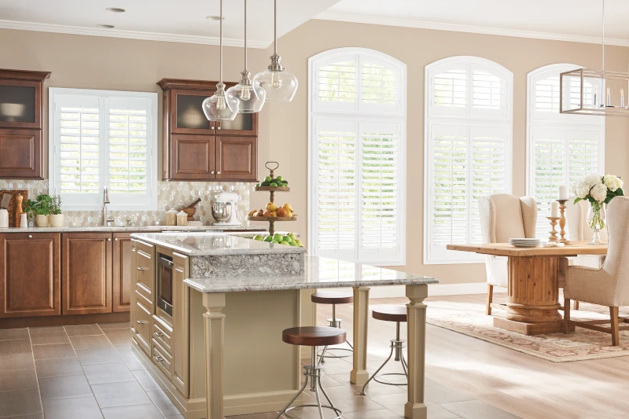

Luxury Blinds and Shades for Windows
Call Brent & Edna today at 405-259-5599
for your window treatment questions.
Window treatments can express your style in a definitive way. This special power of expression is a product of the
prominent role window treatments play in a room’s overall design scheme: window treatments control the light and view to the outdoors. If you want to convey a particular look or emotion, start with the windows. So, if you’re trying to convey a sense of luxury, shades and blinds are a great way to impart opulence through beautiful designs, rich colors, and
exquisite materials.
Let’s look at some of the ways you can use shades and blinds to add luxury to your home.
Lush, Premium Drapery Fabrics
Fabric can make a dramatic statement. Elaborate brocades, gossamer sheers, and luscious fabrics in jewel tones and brilliant patterns can set the tone for a luxurious room. For rooms where light control is not a primary concern, a beautiful sheer drapery can create a soft light that elevates the mood and sets up a contrast for the colored design elements. A room-darkening set of drapery in a dark blue can express confidence and formality. And a bold floral pattern
paired perfectly with the room’s décor and artwork is the height of luxury.
Layering two sets of drapery is another way to achieve a luxurious look. The most traditional and versatile combination is a set of room-darkening drapery over a sheer or semi-sheer set of drapes. It’s a combination that creates visual interest and gives you a full range of options for controlling light.
One of the reasons drapery is the go-to option for designers looking to create a luxurious look is the amazing range of fabric choices. You will find hundreds of fabrics in Graber’s custom drapery collections, including a full array of colors, textures, and patterns.
Luxurious Roller Shade Fabrics
One of the simplest ways of adding a sense of luxury to a room is with a roller shade. Graber offers a wide variety of roller shade fabrics, some of which are exquisite. Perhaps the most luxurious of all the roller shade fabrics are the semi-sheer materials. Any roller shades can be layered with traditional fabric drapery to create depth and to give you more light control options.
The ultimate luxury would have to be a motorized roller shade. Motorizing your roller shade lets you raise and lower it with a remote control, your phone, or a tablet. And with the optional Graber app and gateway, you can program your shades, set schedules, and control your shades from anywhere in the world.

Richly Hued Natural Shades
Bring the richness of natural materials into your home with Graber Natural Shades. Made with wood, bamboo, grasses, and rattan, natural shades display the exquisite colors, patterns, and natural variations of hand-harvested, sustainable materials. No two shades are alike—they’re closer to works of art than shades. And natural shades can also be motorized for the ultimate in ease and convenience.
One of the things that surprises people about natural shades is the range of colors. The color and texture of the different natural materials give designers the opportunity to bring exactly the right hue into a design scheme. Natural shades contrast beautifully with whites, off-whites, sculptural furniture, and sleek materials such as silk.
Sheer Shades
Perhaps the most elegant of all window treatments is the sheer shade. A Graber Sheer Shade can be thought of as fabric blinds. The “slats” are made of fabric and attached to two flat sheets of sheer fabric. They operate much like blinds do. They’re highly functional and filter light in a delicate way. Designers choose sheer shades to convey a sense of serene beauty and to maximize available light without entirely losing privacy. Graber offers a broad range of fabric options for sheer shades—there’s a fabric for every room.
Real Wood Blinds and Shutters
For many, the height of luxury is real wood—finely milled and finished to perfection. Graber offers two real-wood window
treatments that can lend any space a sense of classic tradition.
Graber’s wood blinds and shutters are made with North American hardwoods. Graber utilizes basswood, which is perfectly suited to crafting the slats and louvers for blinds and shutters. Our foresters practice sustained yield forestry management and send the cut lumber to our sawmill in Grayling, Michigan.
Graber Wood Blinds are works of art. Choose from a wide variety of finishes. Select “Honey Maple” for a warm finish that accentuates the grain. Or choose a natural finish, which lets the delicate beauty of the natural grain shine through. You’ll also find painted finishes such as light grays and off whites that can add a clean contrast to a room that has eccentric details.
For the ultimate in classic tradition, choose a wood shutter. Graber’s interior wood shutters are of the highest quality. Their sturdiness and durability make them less like window treatments and more like architectural components. Like Graber’s real wood blinds, Graber Wood Shutters come in a huge variety of finishes.
Quality is Luxury
When you look at a wood shutter or an opulent set of drapery, you get a sense of luxury. But luxury is more than appearance—it’s something you can feel. When you feel the nearly weightless lift of a Graber Roller Shade equipped with UltraLite Cordless Lift or feel the finely crafted louver of a Graber Wood Shutter, you can feel the quality. When you choose Shaded In The Sun and Graber, you’re getting a finished product that will endure and delight for years to come.
Call Brent & Edna today at 405-259-5599
for your window treatment questions.